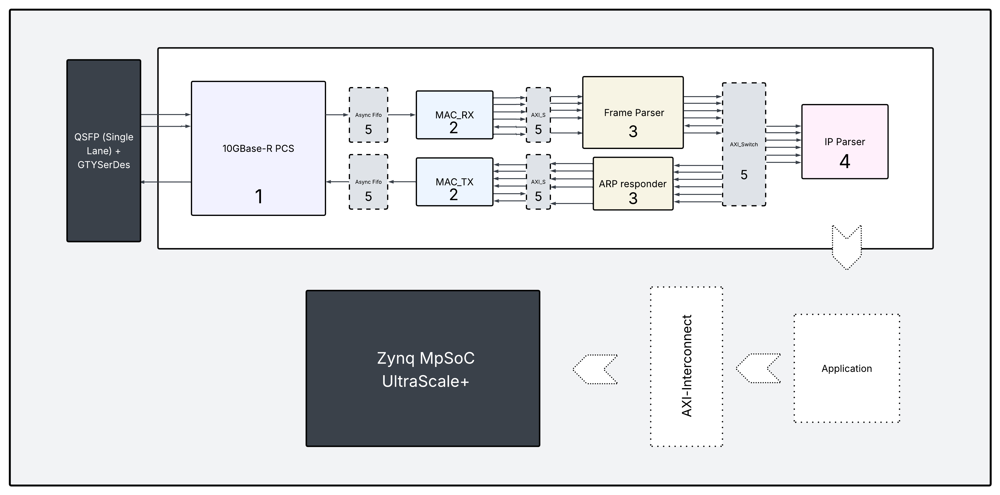
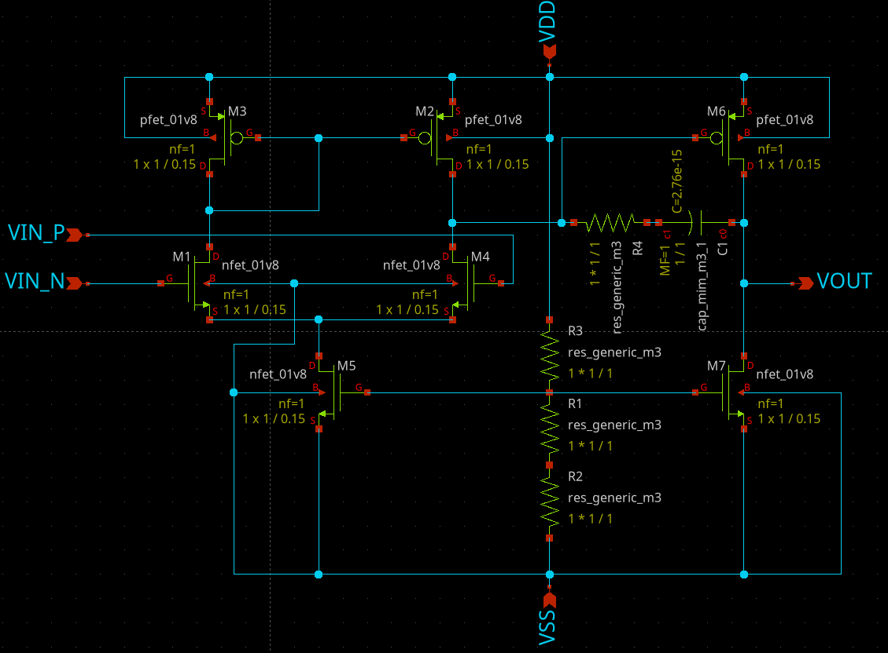

A summary of the things I have done at the University of Waterloo's ASIC design team.
During my 3rd co-op term, right after 2A, I joined UW ASIC. At the time, the digital team was building a 10G Ethernet parser, but before contributing to that I had to complete the digital team's onboarding project: implementing an SPI peripheral that interfaces with an existing PWM peripheral. The source for that project is available here.
The onboarding project involved taking in a one-bit data line and clock from an attached device, then implementing cross-clock-domain logic to safely capture that data on the system's clock signal. From there, I loaded the incoming bits into a buffer and decoded the frame: the first bit indicated a read or write, the next three bits selected a specific register, and the remaining 8 bits were the data payload for that register. The register values were then consumed by a PWM module, which generated a PWM output based on the current register state. Part of the onboarding also involved writing a Python-based testbench using the cocotb library, driving input signals into the design and asserting that the resulting outputs fell within an acceptable tolerance.
I chose to work on the interface team. My task was to ensure a correct AXI4-Stream communication protocol between the MAC RX and Frame Parser blocks, and between the ARP responder and MAC TX. I started by reading through the AMBA AXI4-Stream Protocol Specification to fully understand the handshaking and signal semantics involved. I then studied how the MAC, Frame Parser, and ARP responder blocks worked internally, not strictly required for my task, but useful context for reasoning about the interface correctly. Below is an image of the ethernet parser layout.

Between the MAC and the Frame Parser / ARP Responder, the ASIC team identified a need for an asynchronous FIFO to bridge the clock-domain delay between the two blocks. I was tasked with implementing a token-based async FIFO to solve this. The source code is available here. The architecture is based on the token ring design described in Comparison of Synchronization Techniques in Pointer FIFOs.
The Analog ASIC design team, like the digital one, runs its own onboarding process. The task is to design a two-stage Miller-compensated OTA, which I implemented in XSchem and simulated entirely in ngspice. Below is the schematic for my design.

I have yet to lay out this design, but plan to do so in the coming weeks. During onboarding, one of the team leads gave me a copy of Design of Analog CMOS Integrated Circuits, Second Edition, by Razavi. I worked through the following chapters:
The team lead then assigned the following chapters:
I'm nearly finished with these. My current task is to summarize each chapter and build working expertise in the material, something I'm actively in the process of completing.